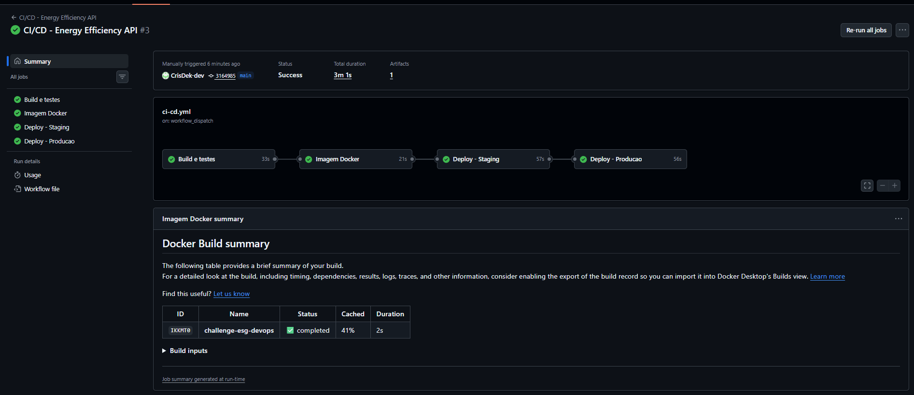
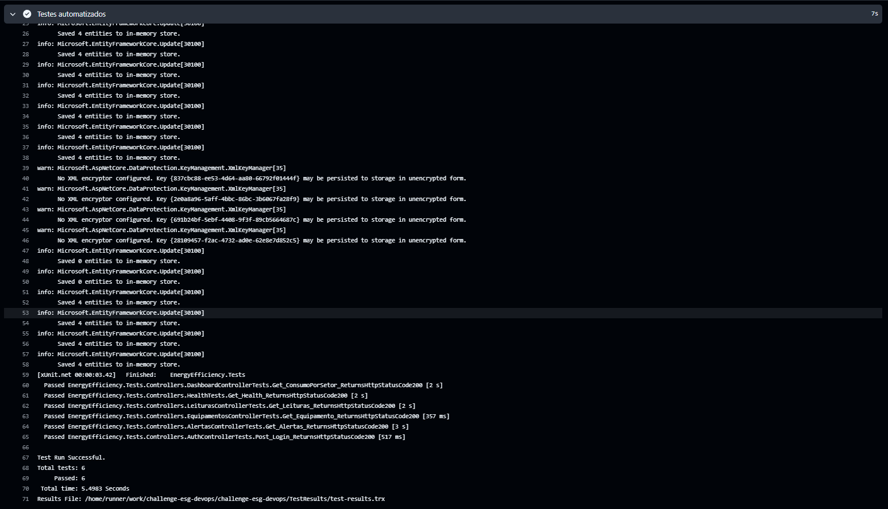
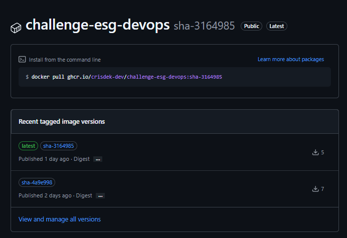
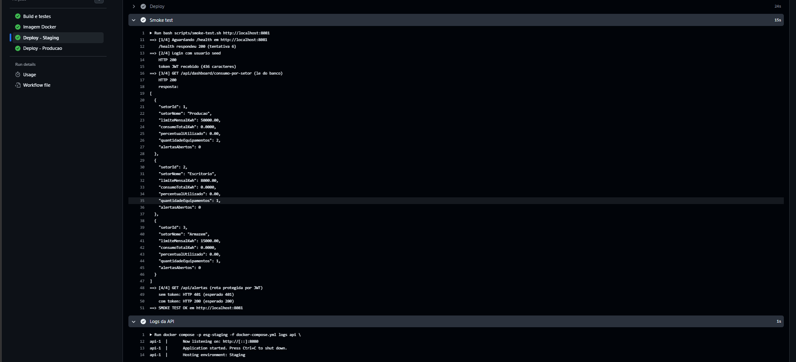
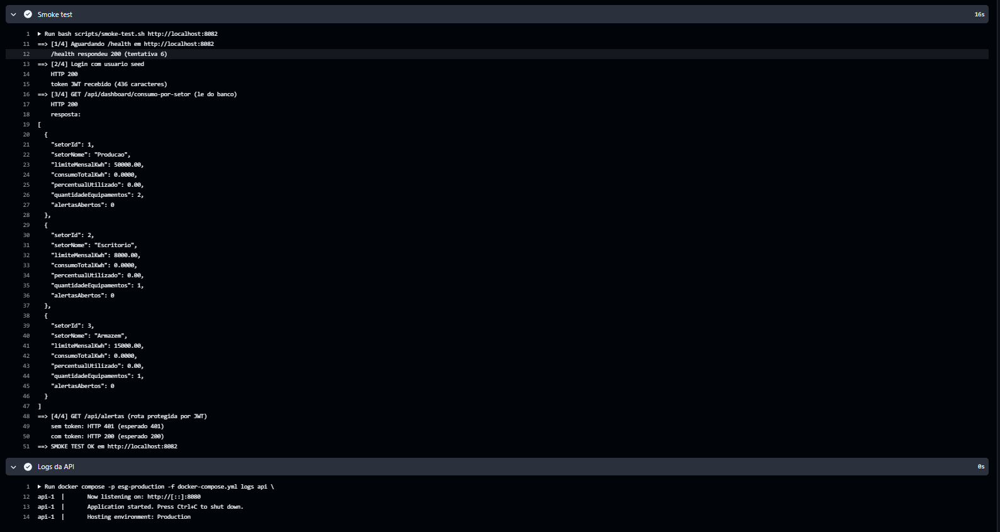
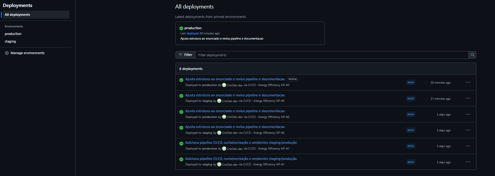

A aplicação escolhida foi a API do challenge em C# (.NET 8) com o tema ESG de eficiência energética. Ela recebe leituras de consumo dos equipamentos de cada setor de uma empresa, gera alertas quando um setor passa do limite mensal de kWh, permite ligar e desligar equipamentos (só para ADMIN) e mostra um relatório de consumo por setor. O banco é SQL Server e a autenticação é feita com JWT.
Para esta atividade o projeto foi adaptado para simular um ambiente de produção: foi criado um pipeline de CI/CD no GitHub Actions, a imagem Docker passou a ser publicada em um registry e o deploy acontece de forma automática em dois ambientes, staging e produção.
Ferramenta: GitHub Actions (arquivo .github/workflows/ci-cd.yml). O pipeline roda a cada push na branch main e também pode ser disparado manualmente. Em pull requests só a parte de build e testes é executada.
| Etapa | O que faz |
|---|---|
| 1. Build e testes | Instala o .NET 8, restaura as dependências, compila em Release e roda os 6 testes automatizados (xUnit). O resultado dos testes fica salvo como artefato test-results da execução. |
| 2. Imagem Docker | Builda a imagem a partir do Dockerfile e publica no GitHub Container Registry (ghcr.io) com a tag do commit (sha-xxxxxxx) e a tag latest. |
| 3. Deploy - Staging | Baixa a imagem publicada, sobe a API e o SQL Server com docker compose usando a configuração de env/staging.env (porta 8081) e executa o smoke test. |
| 4. Deploy - Produção | Só executa se staging passou. Usa a mesma imagem, com a configuração de env/production.env (porta 8082), e executa o smoke test de novo. |
Lógica: cada etapa depende da anterior (needs). Se o build ou algum teste falhar, a imagem não é gerada; se staging falhar, nada vai para produção. Assim só chega em produção uma versão que compilou, passou nos testes e funcionou em staging. A mesma imagem (mesma tag) é usada nos dois ambientes, só a configuração muda.
Smoke test (scripts/smoke-test.sh): depois de cada deploy o script (1) espera o endpoint /health responder 200; (2) faz login com o usuário de seed e confere se veio um token JWT; (3) chama /api/dashboard/consumo-por-setor, que lê do banco, então o status 200 mostra que a API conectou no SQL Server e rodou as migrations e o seed; (4) chama /api/alertas sem token (precisa dar 401) e com o token (precisa dar 200), para conferir que a autenticação está funcionando no ambiente.
Segredos: a senha do SQL Server e a chave do JWT não ficam no repositório. No pipeline elas são geradas aleatoriamente a cada deploy com openssl rand e mascaradas nos logs. Localmente elas ficam no arquivo .env, que está no .gitignore (o repositório tem só o .env.example).
Ambientes: staging e production estão cadastrados como Environments do GitHub, então cada deploy fica registrado no repositório. Como não foi usada nuvem paga, o deploy acontece no próprio runner do GitHub Actions: a stack sobe, o smoke test valida o ambiente e no final ele é derrubado.
rede "backend" (bridge)
+-------------------------+ +---------------------------+
| api | | sqlserver |
| imagem: ghcr.io/... | -----> | mssql/server:2022-latest |
| porta 8080 (container) | 1433 | volume: mssql-data |
+-------------------------+ +---------------------------+
|
porta publicada: 8080 (local) / 8081 (staging) / 8082 (produção)
depends_on: condition: service_healthy).SELECT 1 pelo sqlcmd.mssql-data: mantém os dados do banco mesmo se o container for recriado.backend: a API acessa o banco pelo nome do serviço. Em staging e produção a porta do banco não é exposta para fora. Só no modo local o docker-compose.override.yml expõe o banco na porta 14333 do host.docker-compose.yml serve para local, staging e produção.Estrutura do projeto: o Dockerfile, o docker-compose.yml, o README.md e a pasta .github/workflows/ ficam na raiz, e o código fica em src/ (src/EnergyEfficiency.Api com a API e src/EnergyEfficiency.Tests com os testes).
O Dockerfile usa multi-stage build: o primeiro estágio usa a imagem do SDK para restaurar e publicar o projeto, e o estágio final usa só o runtime do ASP.NET com os arquivos publicados, o que deixa a imagem bem menor. O .csproj é copiado antes do resto do código para aproveitar o cache do dotnet restore, e a aplicação roda com o usuário app (sem root).
Imagem gerada: ghcr.io/crisdek-dev/challenge-esg-devops (tags sha-<commit> e latest).
| Comando | Para quê |
|---|---|
copy .env.example .env (no PowerShell/Linux: cp) | Criar o arquivo de variáveis local |
docker compose up -d --build | Buildar a imagem e subir API + banco localmente (Swagger em http://localhost:8080) |
docker compose ps / docker compose logs api | Ver os containers e os logs da API |
docker compose down -v | Derrubar a stack e apagar o volume |
bash scripts/deploy.sh staging | Deploy de um ambiente (usado pelo pipeline, que define as variáveis da imagem e dos segredos) |
bash scripts/smoke-test.sh http://localhost:8081 | Validar o ambiente depois do deploy (usado pelo pipeline; precisa de curl e jq) |






.env.example no repositório e o .env real no .gitignore. No pipeline os segredos são gerados a cada deploy e mascarados nos logs./health (com teste automatizado) e o script de smoke test, que testa o login, uma rota que lê do banco e uma rota protegida (com e sem token).depends_on, a API podia subir antes de o banco aceitar conexões. Para evitar isso, foi adicionado um healthcheck no banco e a API passou a esperar o banco ficar saudável.src/. Os projetos foram movidos para src/ e o Dockerfile para a raiz, ajustando a solution, o Dockerfile, o compose, o pipeline e o executar-api.bat. O .dockerignore que ficava dentro da pasta da API (e que o Docker nem lia, porque o contexto do build é a raiz) foi removido, ficando só o da raiz.ubuntu-latest vai mudar de versão. As actions foram atualizadas para as versões que usam Node.js 24 e o runner foi fixado em ubuntu-24.04.CrisDek-dev), então o pipeline converte o nome. E para os scripts .sh não quebrarem por causa do fim de linha do Windows (CRLF), foi criado um .gitattributes forçando LF.| Item | OK |
|---|---|
| Projeto compactado em .ZIP com estrutura organizada | ☑ |
| Dockerfile funcional | ☑ |
| docker-compose.yml ou arquivos Kubernetes | ☑ |
| Pipeline com etapas de build, teste e deploy | ☑ |
| README.md com instruções e prints | ☑ |
| Documentação técnica com evidências (PDF ou PPT) | ☑ |
| Deploy realizado nos ambientes staging e produção | ☑ |